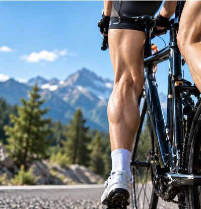
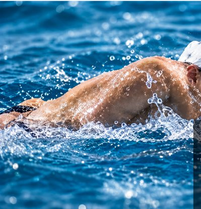

01
CHAPTER
연구실 밖에서 시작한 달리기
15년 동안 공정연구와 기술개발, 품질관리 업무를 해 왔습니다. 달리기는 그 일상 바깥에서 시작한 습관이었습니다. 처음엔 몇 킬로미터, 시간이 지나며 거리는 조금씩 늘어났고 어느새 3년째 달리고 있습니다.
노벤디아 대표 정두식은 화학 제조회사에서 15년을 일한 연구원이자, 3년째 달리고 있는 러너입니다. 달리며 겪은 쓸림을 연구자의 눈으로 들여다본 이야기를 다섯 장으로 나눠 전합니다.
15년 동안 공정연구와 기술개발, 품질관리 업무를 해 왔습니다. 달리기는 그 일상 바깥에서 시작한 습관이었습니다. 처음엔 몇 킬로미터, 시간이 지나며 거리는 조금씩 늘어났고 어느새 3년째 달리고 있습니다.
거리가 길어지자 팔을 흔들 때마다 겨드랑이가 쓸렸습니다. 다리는 아직 더 갈 수 있는데, 피부의 따가움 때문에 속도를 늦추는 날이 생겼습니다. 밤 타입 보습제, 기존 스틱, 테이핑을 차례로 써 봤지만 손에 남는 끈적임, 러닝웨어에 남는 얼룩, 땀에 흔들리는 지속력이 늘 아쉬웠습니다.
문제를 연구자의 시선으로 다시 봤습니다. 피부 위에 무언가를 두껍게 덮는 대신, 고분자(폴리머)가 얇고 유연한 필름을 만들어 피부에 밀착되게 한다면 끈적임과 묻어남을 줄이면서 오래 버틸 수 있지 않을까. 그 질문에서 폴리글라이드 스틱의 처방이 시작됐습니다.
“제가 뛰며 느낀 불편과 고통,
제가 제일 잘 아는 기술로 접근했습니다.”

연출 이미지
초기 LAB 샘플부터 러닝크루와 동호회 러너들이 함께 테스트했습니다. 단거리부터 하프, 30km, 풀코스까지 실제 러닝 환경에서 받은 피드백을 처방에 반영했고, 외부 시험기관의 인체적용시험으로 제품력을 다시 확인했습니다. 피막 형성 처방은 특허를 출원했습니다.

러닝화와 러닝웨어를 신중히 고르듯, 피부에 닿는 것도 러닝 기어라고 믿습니다. 노벤디아 폴리글라이드 스틱은 그 첫 번째 기어입니다. 마찰 걱정은 출발선에 두고, 움직임에만 집중할 수 있도록.
끝없는 도전, 멈추지 않는 움직임.
결승선은 끝이 아니라 다음 도전의 출발선입니다. 노벤디아는 그 반복되는 도전 곁에서, 피부의 마찰이 걸음을 멈추게 하지 않도록 돕겠다는 뜻을 이름에 담았습니다.
책상 위 아이디어로 끝내지 않습니다. 대표가 직접 달리고, 러너들과 함께 실제 코스에서 써 본 뒤 고칩니다. 러너의 불편이 제품의 출발점입니다.
수치는 시험기관, 조건, 개인차와 함께 밝힙니다. 출원은 출원이라고, 판정은 판정이라고 씁니다. 과장 대신 확인한 만큼만 말하는 것이 연구자 출신 브랜드의 방식입니다.

신라 문무왕은 죽어서 동해의 용이 되어 나라를 지키겠다고 했습니다. 그 해룡 설화에서 태어난 남색 아기 용이 노벤디아의 수호 캐릭터 무무입니다.
작지만 든든하게, 무무는 제품 위에서 러너의 움직임 곁을 지킵니다.

더 멀리, 더 편안하게. 노벤디아는 러닝에서 시작해 반복적인 마찰이 생기는 모든 움직임을 위한 스킨 기어 브랜드가 되려 합니다.


* 마찰 관리 정도는 사용자와 운동 종목에 따라 다를 수 있습니다.